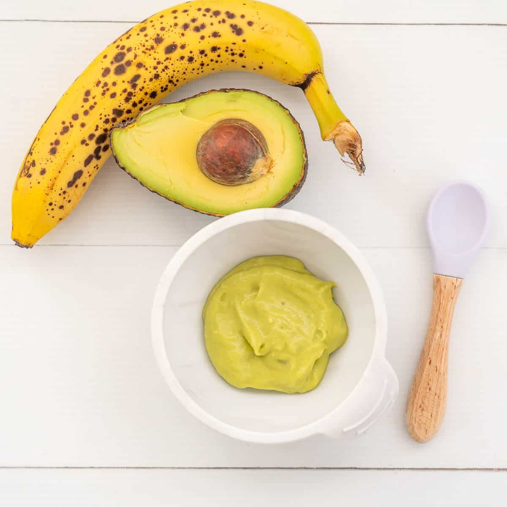

Mashed Banana & Avocado
Ingredients: 1 ripe banana, 1 ripe avocado
Instructions: Mash both together until smooth and serve.

First Feasts is designed to introduce babies to solid foods through the Baby-Led Weaning (BLW) approach, empowering them to explore textures, tastes, and the joy of eating independently. This guide is perfect for parents who want to offer their baby a natural transition from milk to solids, focusing on family-style meals and whole foods that babies can hold and feed themselves.
Ingredients: 1 ripe banana, 1 ripe avocado
Instructions: Mash both together until smooth and serve.
Ingredients: 1 sweet potato, water
Instructions: Boil sweet potato until soft, blend with a little water.
Ingredients: 1/4 cup oats, 1/2 apple (grated), water
Instructions: Cook oats with water, stir in grated apple.
Ingredients: 1 carrot (chopped), 1/4 cup lentils, water
Instructions: Boil until soft, mash together.
Ingredients: 1/2 cup cooked chicken, 1/2 cup peas, water
Instructions: Blend with a little water until smooth.
Ingredients: 1 small piece of cooked salmon, 1/2 sweet potato
Instructions: Mash together and serve.

Ingredients: 1/2 cup spinach, 1 small potato
Instructions: Steam both, then blend with water.
Discover the most loved baby-friendly meals!
Plan your baby's meals for the week.
Your saved recipes will appear here.
Ingredients:
Instructions: